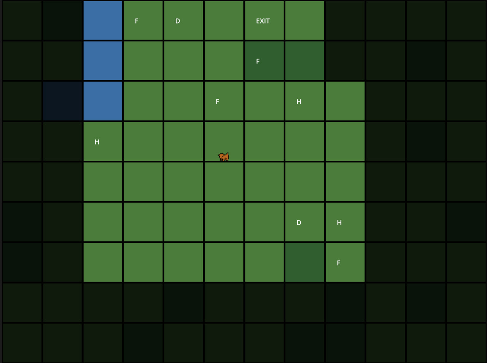
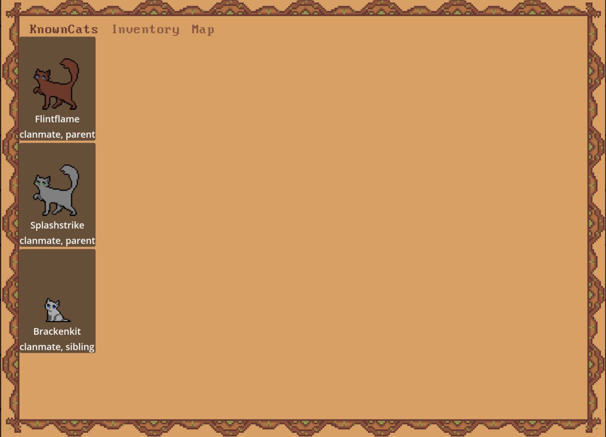

← All projects


About the project
A roguelite with a clan life simulation, inspired by the Warriors book series and ClanGen. The player controls a single cat born into a clan. They explore a tile-based world with fog of war, build relationships with NPCs, and after death receive a procedurally generated epitaph. Developed in Godot 4 / GDScript as a personal project.
Stack
- Engine and language: Godot 4.6, GDScript
- Art: pixel art in Aseprite, layered cat sprites (body, eyes, shadow) for each life stage,
palette_swapandshadowshaders - Data: content stored in JSON (appearance, names, conditions/injuries, loot, causes of death, traits)
- Tools: Git, project documentation in Obsidian
Architecture
-
Separation of data, logic and presentation. Data
lives in
Resourceclasses:CatData,RelationshipData,WorldEvent,LifeLogEntry,MapTile. Logic lives in singleton systems (autoloads):GameState,CatManager,KinshipSystem,TimeskipSystem,PlayerKnowledgeSystem,CatPlacementSystem,ClanGenerator,MapGenerator. Scenes only display state. -
Relationship graph. A directed dictionary
{from_id → {to_id → RelationshipData}}. Bonds (parent/child, mate, mentor, rival,CO_PARENTand more) are stored as a set of bond types. Their semantics are deliberately kept apart: for example,CO_PARENT(“we had kittens together”) is separate fromMATE, laying the groundwork for a scandal mechanic. - KinshipSystem. A read-only query layer over kinship: parents, siblings, grandparents, cousins, mates and former mates. All functions are typed and work by id.
-
Signals. The cat manager emits events
(
cat_died,cat_born,cat_promoted, etc.) without knowing anything about its listeners. This decouples logic, the life log and the UI. -
Event model (hybrid). Active events are tied to
tiles and player actions. Passive ones (births, deaths, injuries
during a timeskip) obey the fog of war: the player learns about them
through dialogue rather than by “seeing” them. The shared event engine
(
EventResolver) is built on a registry of named predicates and JSON event descriptions.
Highlights
-
A full clan life cycle: aging, roles and promotions, mentorship,
pregnancy, birth, death. The related bonds automatically become
“former” ones (
MATE → PAST_MATE,MENTOR → PAST_MENTOR). - A condition system (illnesses, injuries, pregnancy) processed monthly, with possible loss of limbs.
- Generation of “phantom” dead parents so every cat has a complete family tree.
- Knowledge-level fog of war: “heard of a cat” and “has seen it” are different states, and dead cats don't count as seen.
- Clan and tile map generation with activities (hunting, herb gathering, digging) and NPC placement across the territory.
- Procedural epitaphs based on the cat's life log.
- Retro look: 1152×864 resolution (4:3), 96 px tiles, pixel font.
Inspiration
The Warriors book series and the browser game ClanGen. The main difference from ClanGen: instead of abstract text patrols, there's a real map that the player walks around and lives in.
Where we are now (status)
Done:
- map and clan generation
- NPC placement
- kinship graph and
KinshipSystem - pregnancy and birth
- condition system
- fog of war and player knowledge
- UI skeleton (player menu, map, inventory and known cats tabs)
In progress:
EventResolverand passive events (random deaths and injuries)- dialogue via
talk_to()(once a month per cat) - epitaph screen
- inbreeding prevention
- re-placing cats on every timeskip
Backlog: tasks from the mentor and the deputy with social consequences, predators on the map, CO_PARENT.
What I did
- Designed and implemented a clan life simulation in Godot 4/GDScript: aging, mentorship, pregnancy and birth, death, and a relationship graph between NPCs.
- Built a kinship system (
KinshipSystem) and semantically separated bond types as a foundation for future social mechanics. - Set up an architecture separating data, logic and presentation:
Resourcemodels, singleton systems, signal-based communication between modules. - Implemented knowledge-level fog of war and a hybrid model of active and passive events.
- Organized content in JSON and the pixel art pipeline (Aseprite, layered sprites, shaders).